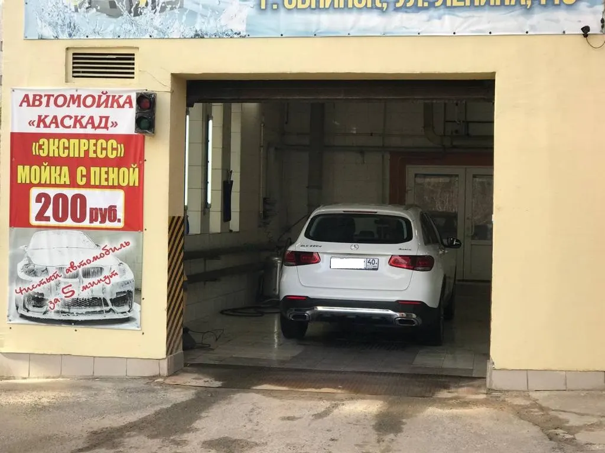
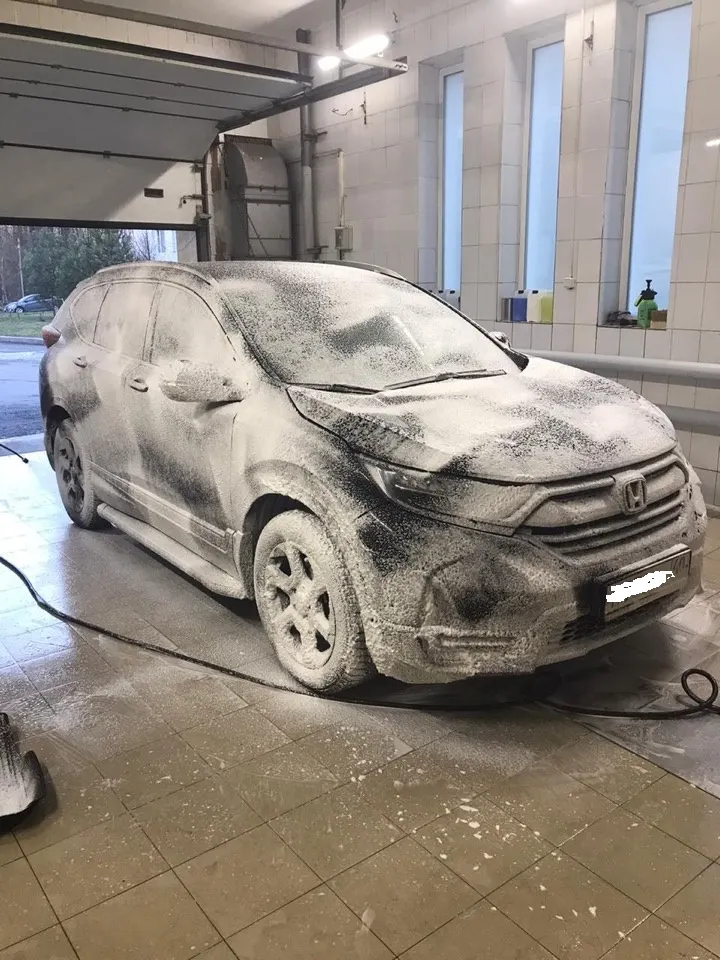
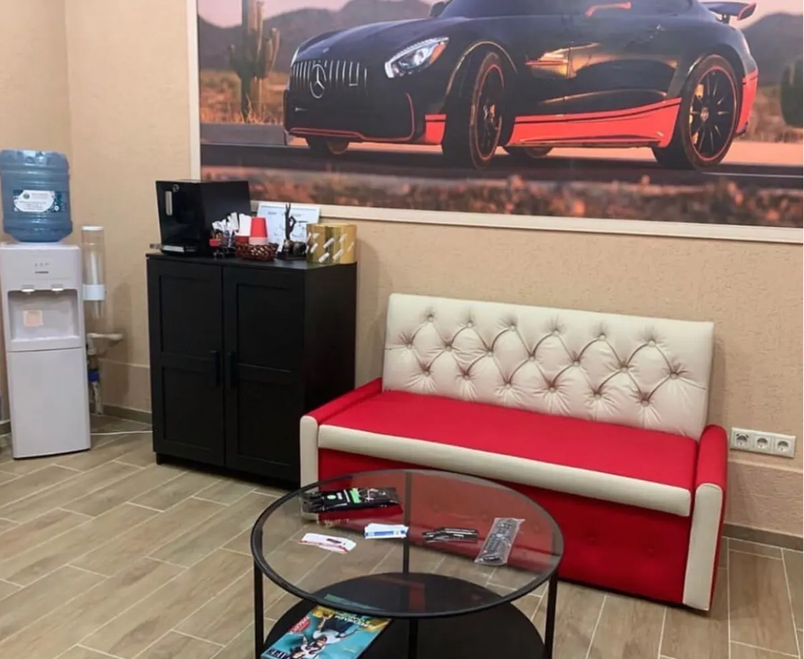
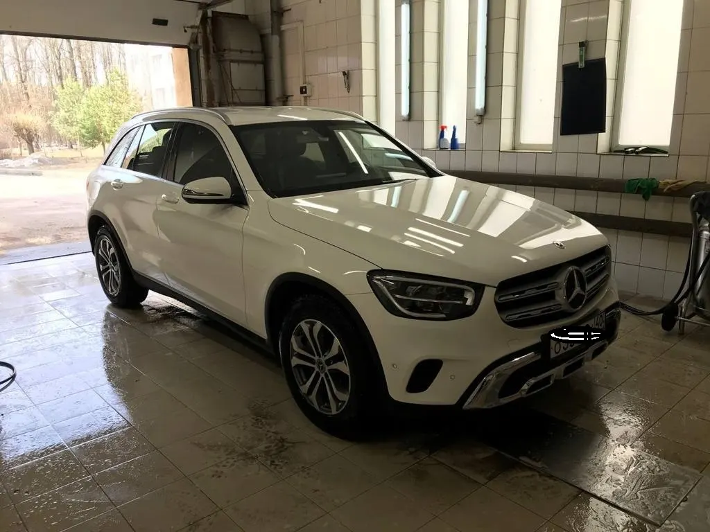

Автомойка · Шиномонтаж · Обнинск
Мойка и шиномонтаж в Обнинске по записи – приехали в своё время, без очереди
Мойка кузова от 250 ₽. Ждёте с зерновым кофе в комнате ожидания с видом на бокс.
- Ежедневно 08:00–22:00, пр-т Ленина, 148
- Мойка, шиномонтаж, химчистка – в одном месте
- Мойка кузова от 250 ₽

Как устроен визит
Входит
- Записались на удобное время
- Приехали – сразу в бокс, без очереди
- Ждёте с кофе: комната ожидания с видом на мойку
- Забираете машину чистой – в среднем за 45 минут
Отдельно, если нужно
- Шиномонтаж и балансировка
- Химчистка и полировка
- Wi-Fi, кафе, оплата картой или наличными
Цена известна до приезда
Мойка кузова – по цене с карточки. Стоимость остальных услуг называем при записи.
Мойка
- Мойка кузовабесконтактная, цена с карточкиот 250 ₽
- Комплексная мойкакузов + салон, из отзыва: 1 500 ₽ (2024)уточнить
- Мойка двигателяуточнить
- Мойка днища и колёсуточнить
Сервис
- Шиномонтаж, балансировкауточнить
- Химчистка салонапо отзывам – «на высшем уровне»уточнить
- Полировка кузовав отзывах: машина «как с салона»уточнить
Мойка кузова – от 250 ₽, цена с карточки. Остальное называем честно при записи – без сюрпризов на месте.
Как проходит
- 01
Записались на удобное время
По телефону или онлайн, за минуту.
- 02
Приехали – сразу в бокс
Работаем по записи, очередей нет.
- 03
Ждёте с зерновым кофе
Уютная комната ожидания, виден процесс мойки.
- 04
Забираете машину чистой
Мойка кузова – от 250 ₽, салон пропылесосим.



Что обещаем
По записи – без очереди
Приезжаете к своему времени и сразу в бокс.
Моем как свою машину
Продуваем щели, без разводов и подтеков.
Кофе, пока ждёте
Чай и зерновой кофе в комнате ожидания.
Всё для машины в одном месте
Мойка, шиномонтаж, химчистка, полировка.
Отзывы с Яндекс.Карт
«Мойка и шиномонтаж по записи. Очень удобно. Записалась в удобное для себя время, приехала переобули, помыли. Все прекрасно. Уехала очень довольная.»
Olesya F. · 13 ноября
«очень удобно что можно приехать по записи в назначенное время и не стоять в очереди. Хороший вежливый персонал. Всем рекомендую!»
Вячеслав Секретев · 9 января 2025
«Отличная мойка, по крайней мере лучшая в городе и на этой местности. Ребята относятся к машине бережно. Продувают все щели, и не остаётся подтеков. Дополнительный бонус – чай, кофе зерновой.»
Антон К. · 2 октября 2021
Отзывы с карточки на Яндекс.Картах, без правок.
Частые вопросы
Нужно ли записываться заранее?
Да, работаем по записи: без неё попасть трудно. Запишитесь онлайн или по телефону – приедете к своему времени и не будете стоять в очереди.
Сколько стоит мойка?
Мойка кузова – от 250 ₽. Комплексную мойку и сервис озвучим при записи: цена будет известна до приезда.
Сколько времени занимает мойка?
По отзывам клиентов – около 45 минут на комплексную мойку.
Чем заняться, пока жду?
В комнате ожидания – чай и зерновой кофе, телевизор, вид на бокс.
Кроме мойки что-то делаете?
Да: шиномонтаж с балансировкой, химчистка салона, полировка кузова.
Запишитесь к своему времени
- Адрес
- Обнинск, пр-т Ленина, 148, Обнинске
- Часы
- Ежедневно 08:00–22:00
- Телефон
- +7 (910) 910-85-25